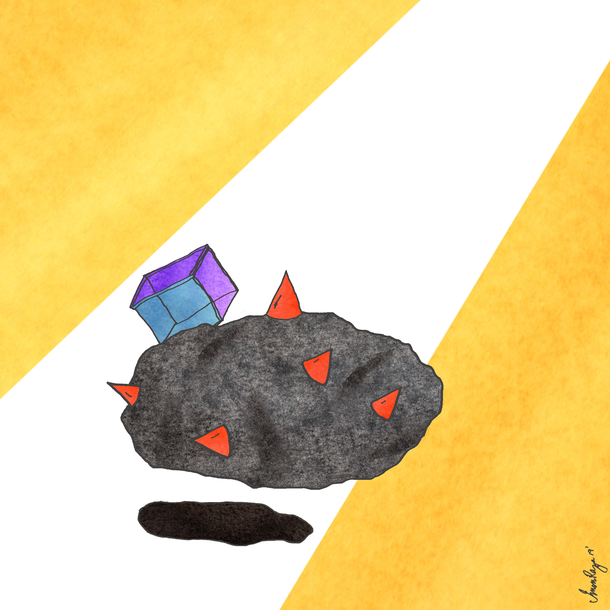
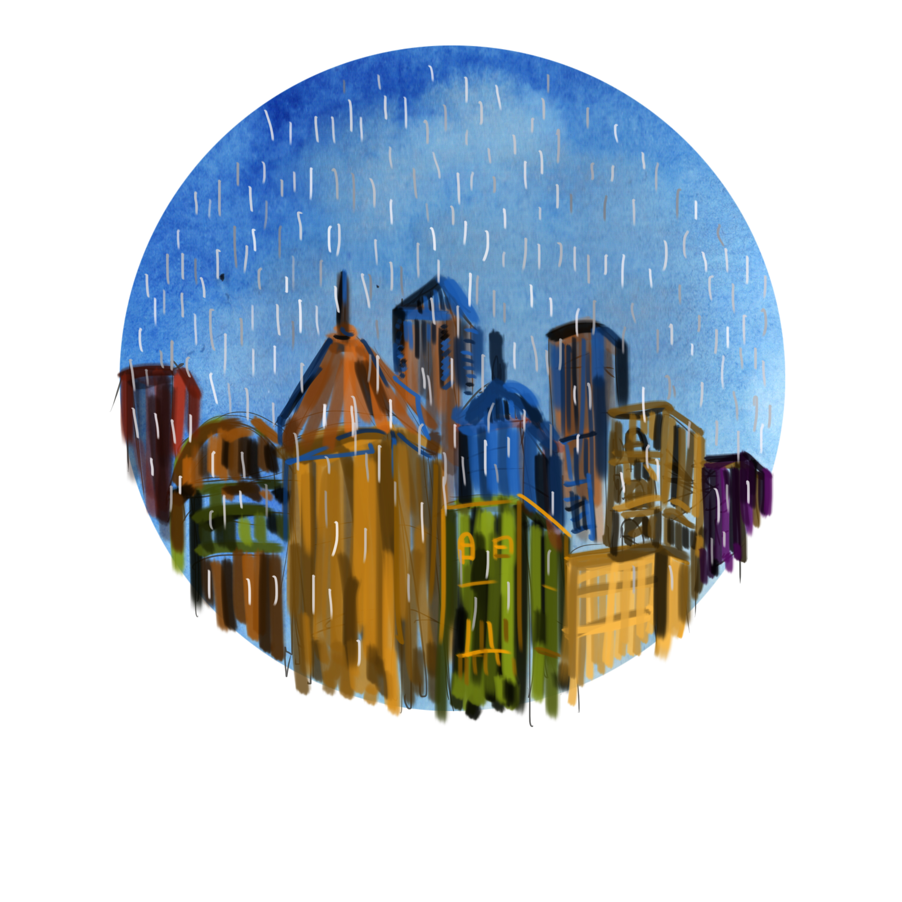
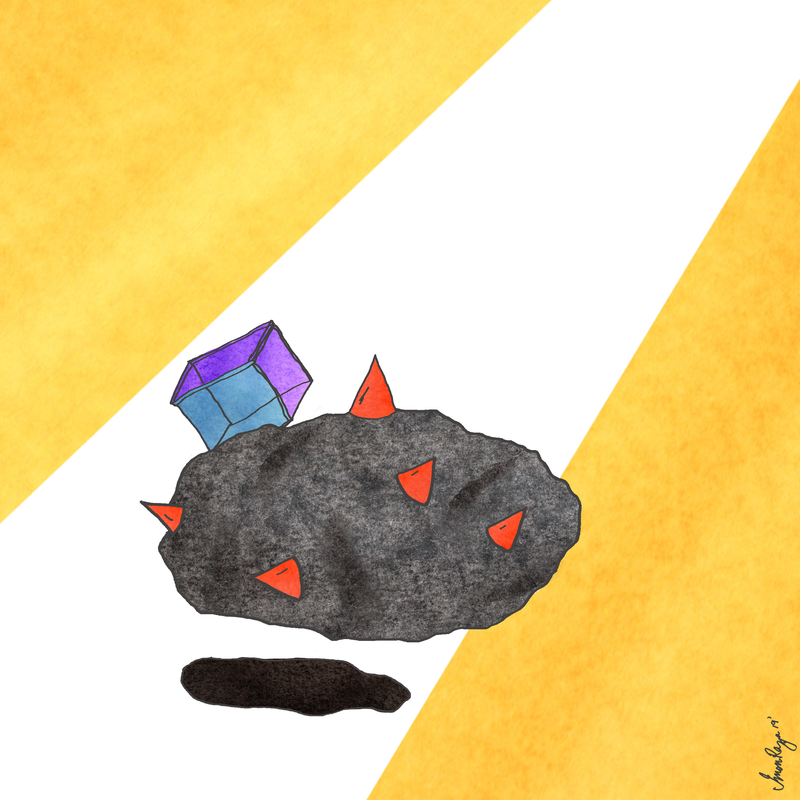
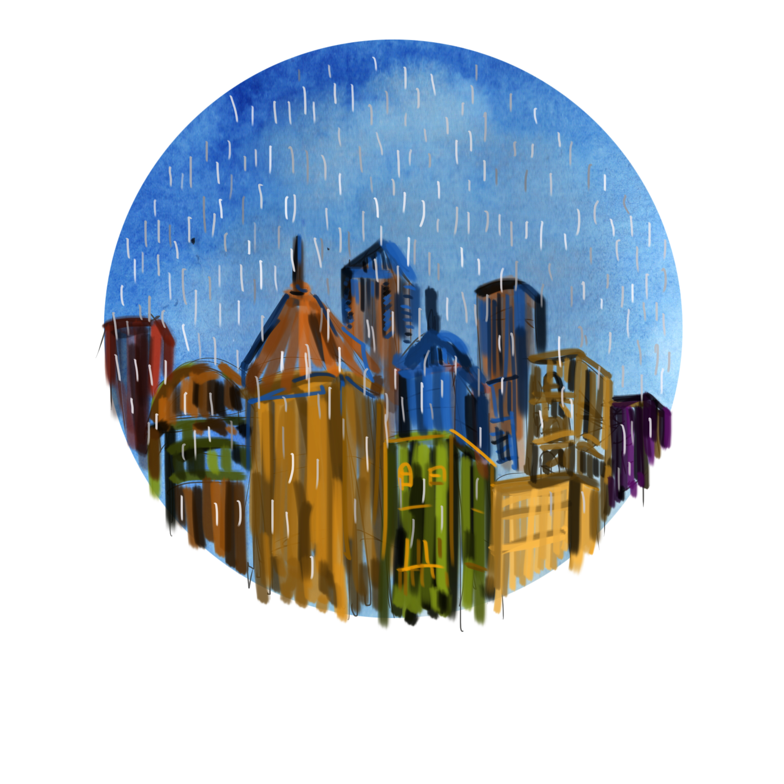
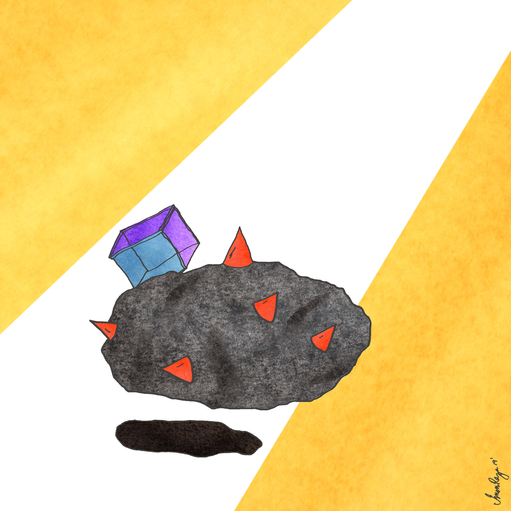
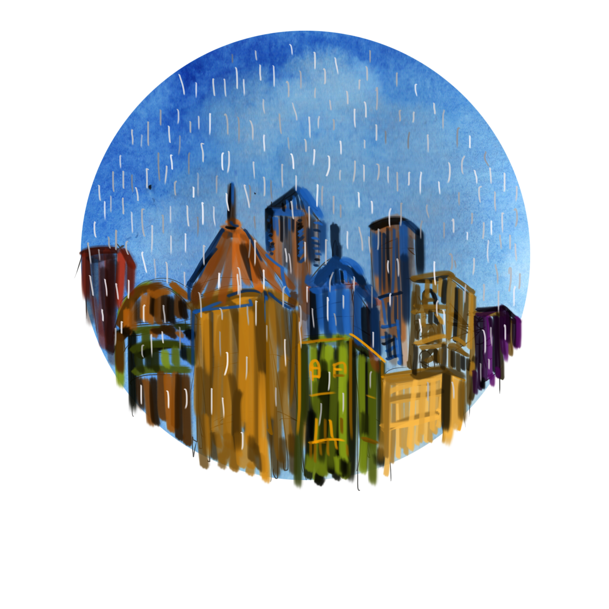

Communication Designer | Artist.
Imon Raza, born 1990 in Assam, India is a new media artist and a communication designer. He graduated from National Institute of Design, Ahmedabad, India and has been working with various organizations since in varying capacities. He also has a keen interest in Indigenous studies and folklore. He has published 3 research papers on the same so far and attended national and international conferences on folklore as well. He currently heads a non-profit, Heritage Art & Design in Assam, India, who work towards reinterpreting cultural heritage and also trying to incorporate heritage and cultural studies in primary sections through design intervention. He believes in social impact through mindful design and in social design as a key element in this neo post modern era, as a powerful tool for a better tomorrow.

